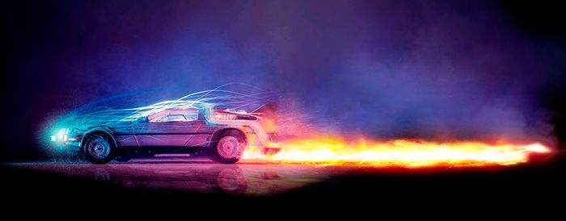

- Back to the Future (1985)---https://www.amazon.com/Back-Future-Michael-J-Fox/dp/B00439FUYA
- Back to the Future Part II (1989)---https://www.amazon.com/Back-Future-Part-Michael-Fox/dp/B00439KW1Q
- Back to the Future Part III (1990)---https://www.amazon.com/Back-Future-Part-III-Michael/dp/B00439KW2U


Alexis Cárdenas Saldaña
Toby Glick
HARKNESS INSTITUTE
Azucena Cervantes Ponce
13/02/2020
Proyecto Final
6 "A"